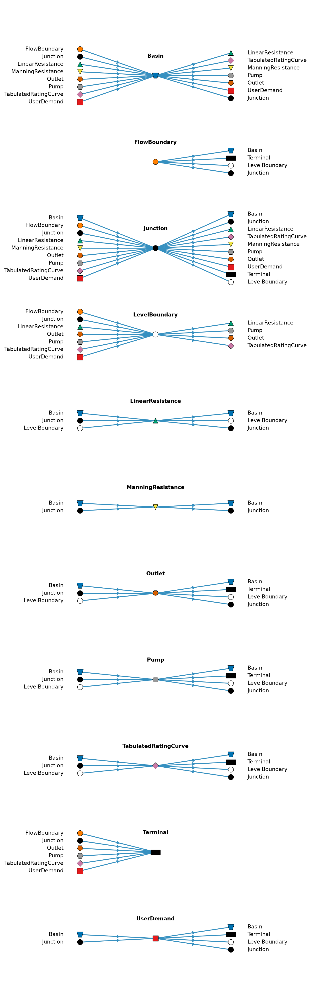

Code
%run ../../utils/plot_node_connectivity.py
import matplotlib.pyplot as plt
fig = plot_all_node_connectivity()
plt.show()
plt.close(fig)
The diagram and tables below show the validation rules applied to the input to the Julia core before running the model. Some node types have more complex connectivity validation than shown here. See the Junction and UserDemand pages for their additional rules.
The diagram below shows every allowed upstream and downstream node type for each node type that can have flow links. Each group has its own nodes, with upstream neighbors on the left, downstream neighbors on the right, and flow directed from left to right. This is a connectivity illustration, not a valid simulation model.
The tables below show the minimum and maximum numbers of incoming and outgoing neighbors for each node type, per link type. ∞ means there is no upper bound.
from ribasim.validation import link_neighbor_amount
for link_type in ("flow", "control", "listen"):
node_bounds = link_neighbor_amount[link_type]
print(f"\n## {link_type.title()} links\n")
print("| Node type | in_min | in_max | out_min | out_max |")
print("|:----------|-------:|-------:|--------:|--------:|")
for node_type, bounds in node_bounds.items():
values = ["∞" if value == 2**63 - 1 else str(value) for value in bounds]
print(f"| {node_type} | {' | '.join(values)} |")
print()| Node type | in_min | in_max | out_min | out_max |
|---|---|---|---|---|
| Basin | 0 | ∞ | 0 | ∞ |
| ContinuousControl | 0 | 0 | 0 | 0 |
| DiscreteControl | 0 | 0 | 0 | 0 |
| FlowBoundary | 0 | 0 | 1 | 1 |
| FlowDemand | 0 | 0 | 0 | 0 |
| Junction | 0 | ∞ | 0 | ∞ |
| LevelBoundary | 0 | ∞ | 0 | ∞ |
| LevelDemand | 0 | 0 | 0 | 0 |
| LinearResistance | 1 | 1 | 1 | 1 |
| ManningResistance | 1 | 1 | 1 | 1 |
| Observation | 0 | 0 | 0 | 0 |
| Outlet | 1 | 1 | 1 | 1 |
| PidControl | 0 | 0 | 0 | 0 |
| Pump | 1 | 1 | 1 | 1 |
| TabulatedRatingCurve | 1 | 1 | 1 | 1 |
| Terminal | 1 | ∞ | 0 | 0 |
| UserDemand | 1 | ∞ | 1 | 1 |
| Node type | in_min | in_max | out_min | out_max |
|---|---|---|---|---|
| Basin | 0 | 1 | 0 | 0 |
| ContinuousControl | 0 | 0 | 1 | ∞ |
| DiscreteControl | 0 | 0 | 1 | ∞ |
| FlowBoundary | 0 | 0 | 0 | 0 |
| FlowDemand | 0 | 0 | 1 | 1 |
| Junction | 0 | 0 | 0 | 0 |
| LevelBoundary | 0 | 0 | 0 | 0 |
| LevelDemand | 0 | 0 | 1 | ∞ |
| LinearResistance | 0 | 1 | 0 | 0 |
| ManningResistance | 0 | 1 | 0 | 0 |
| Observation | 0 | 0 | 0 | 0 |
| Outlet | 0 | 2 | 0 | 0 |
| PidControl | 0 | 1 | 1 | 1 |
| Pump | 0 | 2 | 0 | 0 |
| TabulatedRatingCurve | 0 | 1 | 0 | 0 |
| Terminal | 0 | 0 | 0 | 0 |
| UserDemand | 0 | 0 | 0 | 0 |
| Node type | in_min | in_max | out_min | out_max |
|---|---|---|---|---|
| Basin | 0 | 0 | 0 | ∞ |
| ContinuousControl | 1 | ∞ | 0 | 0 |
| DiscreteControl | 1 | ∞ | 0 | 0 |
| FlowBoundary | 0 | 0 | 0 | ∞ |
| FlowDemand | 0 | 0 | 0 | ∞ |
| Junction | 0 | 0 | 0 | ∞ |
| LevelBoundary | 0 | 0 | 0 | ∞ |
| LevelDemand | 0 | 0 | 0 | ∞ |
| LinearResistance | 0 | 0 | 0 | ∞ |
| ManningResistance | 0 | 0 | 0 | ∞ |
| Observation | 0 | 0 | 0 | 0 |
| Outlet | 0 | 0 | 0 | ∞ |
| PidControl | 1 | ∞ | 0 | 0 |
| Pump | 0 | 0 | 0 | ∞ |
| TabulatedRatingCurve | 0 | 0 | 0 | ∞ |
| Terminal | 0 | 0 | 0 | ∞ |
| UserDemand | 0 | 0 | 0 | ∞ |
Junction nodes in Junction / static, which divide the flow or supply a UserDemand, have additional connectivity rules, which are given on the Junction page.
Pump and Outlet can receive two control links, in which case one must be from a FlowDemand, and the other from a control node.